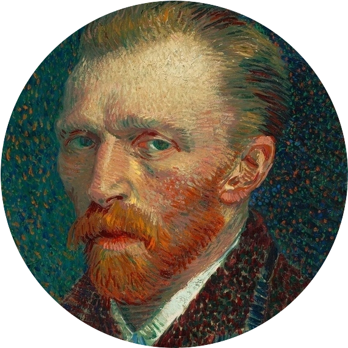

Quem foi Van Gogh? Vincent van Gogh foi um pintor holandês considerado um dos artistas mais importantes da história da arte. Ele nasceu em 30 de março de 1853, na cidade de Zundert, nos Países Baixos. Van Gogh ficou conhecido por suas pinturas com cores fortes, pinceladas marcantes e grande expressão emocional. Hoje ele é um dos maiores nomes do Pós‑Impressionismo.
Olhe para este céu: não é apenas tinta, é puro movimento. Van Gogh pintou essa vista de sua janela no hospício, trocando a realidade pela emoção. Note os redemoinhos de azul e as estrelas que parecem explodir em amarelo;para ele, a noite era muito mais viva que o dia. O cipreste escuro à esquerda liga a terra ao céu, como uma chama silenciosa. É o retrato de uma mente turbulenta buscando conexão com o infinito. Sintético, vibrante e eterno.
A história de sua vida Van Gogh não começou sua vida como artista. Quando jovem, trabalhou como vendedor de arte e também tentou seguir carreira religiosa. Durante algum tempo, ele atuou como missionário entre trabalhadores pobres. Porém, após muitas dificuldades pessoais e profissionais, decidiu dedicar sua vida à pintura por volta dos 27 anos. Mesmo tendo produzido mais de 2.000 obras, incluindo cerca de 900 pinturas, Van Gogh teve pouco reconhecimento enquanto estava vivo. Ele enfrentou muitos problemas emocionais e financeiros, contando principalmente com o apoio de seu irmão, Theo van Gogh. Durante sua vida, ele viveu em diferentes cidades da Europa, incluindo Paris e Arles. Em Arles, produziu algumas de suas obras mais famosas e tentou criar uma comunidade de artistas junto com o pintor Paul Gauguin. No entanto, a convivência entre os dois foi difícil e terminou em conflito.